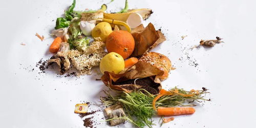

Welcome to ReFood
Help us reduce food waste!
Get Involved
Join us in our mission to make a positive impact on both the environment and the community. You can:
- Upload details about excess food from your business
- Receive notifications when your donations are matched
- Connect with local not-for-profit organizations
- Track your donation history and generate reports

{% endblock %}